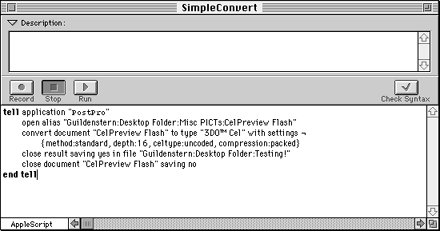
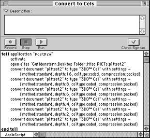

Note: AppleScript is a separate program and must be installed on your system. You can purchase it copy from an Apple retail establishment.
This section first covers how to use a simple script to convert Photoshop files to a specified cel type. Later, it covers how to use a script saved as an application, or droplet, dragging and dropping files onto it for immediate conversion.
Make sure that you have a copy of Script Editor installed on your system. You can place it in a convenient location. It does not have to be placed in either of the System or extensions folders. Look for the icon shown in Figure 1.
Figure 1: Script Editor icon.
For information on the AppleScript language itself, see the Apple "AppleScript Guide" manual.

Figure 2: Simple AppleScript conversion script.
A slightly more complicated type of script can open many files and convert each to its own cel (or image) type, with different characteristics, if desired. The following illustration is an example of a script that opens several PICT files and converts each to a different 3DO cel type with its own specifications and name. Figure 3 shows an example of this type of script.

Figure 3: AppleScript for converting multiple files.
Figure 4: AppleScript droplet icon.
When you drag a group of file icons onto a droplet (application) icon, a message is sent to the application containing a list of the files. AppleScript intercepts the message and runs the script, converting the files.
Double-clicking on the icon opens a window that gives a brief description of what the application accomplishes. Figure 5 shows the droplet window for the icon in Figure 4.
Figure 5: Droplet application window.
This particular droplet application converts Photoshop RGB images to a specified cel type. The script can also be activated (run) by dragging and dropping an alias on to it.